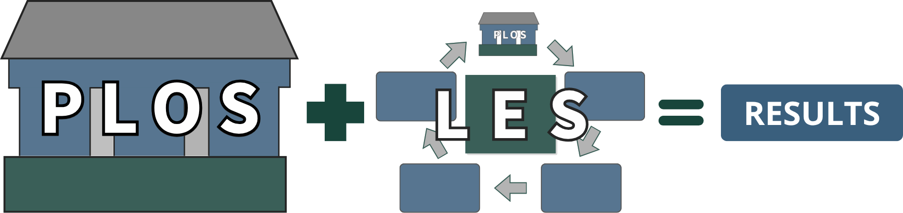

PLOS + LES
The Why.
Why neither system works without the other — and what becomes possible when both are in place.
Most leadership programs deliver one or the other.
A framework that defines expectations. Or a training program that develops skills. Rarely both. And almost never together in a way that creates lasting behavior change.
PLOS defines the standard. LES drives the execution.
One without the other does not work.
Why Neither Works Alone
A defined standard without an execution system becomes a document. Leaders understand the expectations. They may even agree with them. But without a structured rhythm to practice, reinforce, and coach those expectations consistently over time — old habits return. Standards drift. The same problems come back.
PLOS without LES is theory.
An execution rhythm without a defined standard creates activity without direction. Leaders go through the motions of a structured cycle — learning, practicing, applying — but without clear, consistent expectations to anchor that cycle to, the content varies by manager and the system loses its operational purpose.
LES without PLOS lacks direction.
PLOS provides the blueprint. LES provides the rhythm.
Together, they make leadership execution repeatable.
What Becomes Possible When Both Are in Place
When PLOS and LES operate together, four things happen that neither can create alone:
Clear expectations + consistent execution
Leaders know what is expected and practice it repeatedly in real work conditions — not just in a training session.
Behavior change, not event-based training
Leadership behaviors are learned, applied, coached, and reinforced over time. Development stops being a one-time initiative and becomes part of how the plant operates every day.
Alignment across all levels
Supervisors, managers, support function managers, and plant leadership all focus on the same priorities using the same language — across every shift and department.
Execution embedded into daily operations
Leadership development is not extra work added on top of operations. It becomes part of how the site runs every month.

What Changes on the Floor
When leadership execution becomes consistent across the site, operational performance becomes more stable.
Expectations become clearer. Accountability becomes more consistent. Follow-through improves.
Managers coach and reinforce behaviors the same way across the operation. Recurring operational problems become easier to identify, address, and sustain improvements against over time.
Associates understand what is expected. Leaders operate with greater alignment.
Teams become more capable of taking ownership, solving problems, and improving performance together.
Leadership stops depending on individual style. And starts operating as a consistent system.
For HR and Organizational Development Leaders
PLOS and LES together give HR something most organizations lack — a complete, structured framework for both defining leadership expectations and ensuring those expectations are consistently executed over time.
PLOS answers the question HR is often asked but rarely has a clear answer to: "What does good leadership look like here?" LES answers the follow-up: "How do we make sure it actually happens?"
One System. Every Level. Every Month.
PLOS and LES are implemented across the full leadership system simultaneously — not rolled out level by level or department by department.
Supervisors, managers, support function managers, and plant leadership all move through the same monthly cycle together — each with role-specific content anchored to the same leadership standard.
That simultaneous alignment is what creates site-wide consistency.
When every level is developing the same expectations at the same time, the standard reinforces itself across the organization rather than depending on a single level to carry it.
The result is not better training.
It is more consistent leadership behavior, stronger execution, and more stable performance.
Ready to Implement a Complete Leadership System?
The first conversation is a straightforward discussion about where your operation is and whether a leadership system makes sense.